Objetivo
Você comanda um grupo de colonos que reconstrói um continente arrasado. A cada turno, você joga cartas da mão para gerar recursos, usa os recursos para construir no mapa e compra cartas melhores no mercado. Cada construção sua vale pontos de vitória (PV) enquanto estiver de pé.
Vence quem for o primeiro a somar a meta de PV no mapa: 15 PV com 4 jogadores, 16 PV com 3 e 18 PV com 2. Quando alguém chega à meta, a rodada termina para que todos joguem o mesmo número de turnos. Então cada jogador soma às construções as cartas de pontos que tiver no baralho. Quem tiver mais pontos vence.
O gancho do jogo: toda vez que você funda um assentamento (a peça da vilinha, sua construção básica), a carta de produção daquele terreno entra no seu baralho. Mais terra, mais cartas boas, mais recursos, mais construções. O que atrapalha não é ter muitas cartas, e sim carregar cartas fracas: os Colonos do começo e o Entulho que os rivais te mandam. Para se livrar delas existe o exílio.
Descarte não é lixo. Suas cartas circulam entre três pilhas: baralho, mão e descarte. Carta jogada, comprada ou ganha vai para o descarte. Quando o baralho acaba, você embaralha o descarte, e ele vira o baralho novo. Tudo o que entra no descarte volta à sua mão em poucas rodadas. A única forma de tirar uma carta do jogo de vez é exilá-la.
Componentes
37 hexágonos de terreno
- 9 Florestas, 9 Campos, 7 Colinas, 6 Vilas, 5 Ruínas
- 1 Coração, a praça da cidade antiga que fica no centro do mapa
165 cartas
- 40 cartas iniciais (10 por jogador)
- 58 cartas de mercado
- 37 cartas de produção e 18 de oficina
- 12 cartas de Entulho
Peças de cada jogador (4 cores)
- 10 assentamentos (as vilinhas)
- 4 oficinas, 4 torres e 2 castelos
- 2 muralhas
Recursos
Marcadores de moeda , madeira , grão e pedra , numa reserva comum. Eles duram só o turno em que foram gerados.
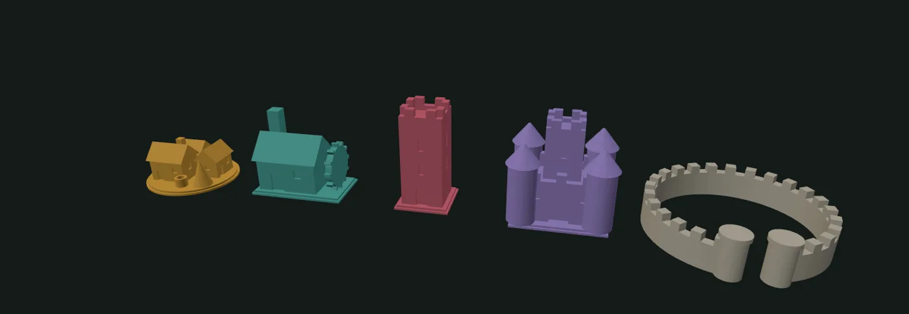
Preparação
- Monte o mapaColoque o Coração no centro da mesa. Embaralhe os outros 36 hexágonos com a face para baixo e distribua-os em três anéis em volta do Coração: 6 no primeiro anel, 12 no segundo e 18 no terceiro. Vire todos para cima.
- Separe as pilhas de produçãoDeixe ao lado do mapa, separadas por tipo, as cartas de Bosque, Lavoura, Lavra, Feira e Relíquia e as cinco cartas de oficina (Serraria, Moinho, Pedreira, Mercado e Santuário). Ninguém compra essas cartas: você as ganha ao construir.
- Prepare o mercadoEmbaralhe as 58 cartas de mercado e abra 6 cartas em fila. Deixe os 12 Entulhos numa pilha à parte.
- Monte o seu baralho inicialCada jogador recebe 5 Colonos, 2 Lenhadores, 2 Agricultoras e 1 Pedreiro, embaralha e compra 5 cartas. Pegue também as peças da sua cor.
- Funde o primeiro assentamentoO jogador mais novo começa. Em ordem de jogo, cada jogador coloca um assentamento grátis num hexágono vazio da borda do mapa e põe a carta de produção daquele terreno no seu descarte (ela entra no baralho na primeira vez que você embaralhar). Tudo o que você construir depois precisa ser vizinho de algo seu.
- Compense quem joga depoisNo primeiro turno, o 2º jogador recebe 1 moeda extra, e o 3º e o 4º recebem 2 moedas. É o suficiente para equilibrar a vantagem de quem abre a partida.
O turno
No seu turno, faça as ações abaixo na ordem que quiser e quantas vezes conseguir pagar. Recursos gerados ficam numa pilha à sua frente até o fim do turno.
- Jogue cartasJogue cartas da mão, uma a uma, e pegue da reserva os recursos que elas geram. Algumas cartas fazem outra coisa: compram cartas, atacam, trocam. Você pode jogar todas ou guardar alguma, como a Guarda.
- Compre no mercadoPague o custo em de uma carta aberta e coloque-a no seu descarte. Reponha a fila com a carta de cima do baralho do mercado.
- ConstruaPague os recursos e coloque ou melhore uma peça no mapa (veja Construções). Se a construção dá uma carta, ela vai para o seu descarte.
- Troque e exile, se quiserA qualquer momento, entregue 3 recursos iguais por 1 de outro tipo. Uma vez por turno, pague 2 para exilar uma carta da mão, tirando-a do jogo.
- EncerreDevolva os recursos que sobraram à reserva (eles se perdem). Coloque a mão e as cartas jogadas no descarte e compre 5 cartas. Quando o baralho acabar, embaralhe o descarte para formar um novo.
Construções
Cada hexágono comporta uma construção. O assentamento é a base de tudo; torre e oficina são dois caminhos diferentes para o mesmo assentamento, pontos ou produção, e o castelo é o topo do caminho dos pontos. A muralha é um anel que se coloca em volta de qualquer construção sua.
Assentamento · a vilinha
A construção básica. Num hexágono vazio vizinho de uma construção sua. Você ganha a carta de produção do terreno. Em Ruína e no Coração, custa a mais.
Oficina
Substitui um assentamento seu. Você ganha a carta de oficina do terreno, que produz o dobro: Serraria, Moinho, Pedreira, Mercado ou Santuário.
Torre
Substitui um assentamento seu. Não dá carta: é pura pontuação, e o degrau para o castelo.
Castelo
Substitui uma torre sua. A construção mais valiosa do jogo, e o alvo preferido da Sabotadora.
Muralha
Cerca qualquer construção sua. Ela fica imune ao Incendiário e à Sabotadora. Se a construção for melhorada, a muralha continua.
Trocando peças: ao melhorar uma construção, devolva a peça antiga à sua reserva. Cada jogador tem 10 assentamentos, 4 oficinas, 4 torres e 2 castelos. Acabaram as peças de um tipo, acabou a possibilidade de construir aquele tipo.
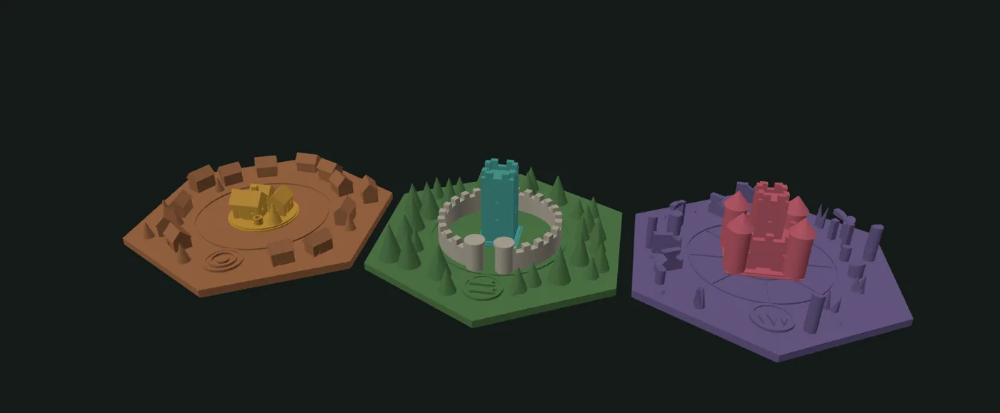
Terrenos
O terreno define a carta que o assentamento dá, a carta que a oficina dá e, nas ruínas, um bônus de pontos. O medalhão em cada hexágono mostra o recurso.
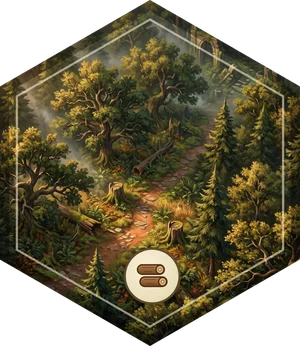
oficina: Serraria +2
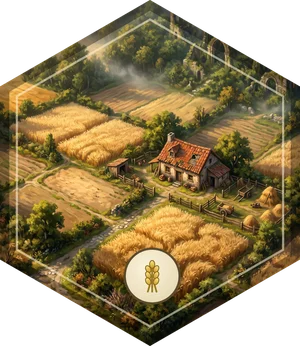
oficina: Moinho +2
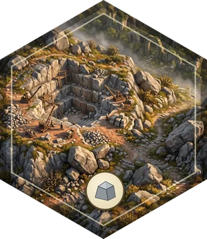
oficina: Pedreira +2
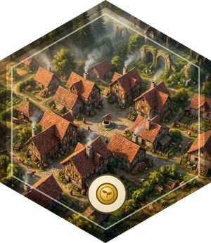
oficina: Mercado +3
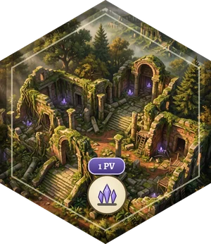
oficina: Santuário +1 , 2 PV no fim
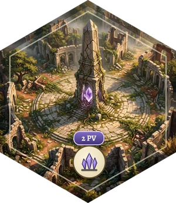
Construir em Ruína ou no Coração custa a mais, e qualquer construção sua ali vale o bônus: um castelo no Coração são 6 PV.
Vitória
Pontos no mapa
| Construção | PV |
|---|---|
| Assentamento | 1 |
| Oficina | 1 |
| Torre | 2 |
| Castelo | 4 |
| Em Ruína, qualquer construção | +1 |
| No Coração, qualquer construção | +2 |
| Muralha | 0 |
Os pontos são sempre o que está no mapa agora. Se um ataque derruba ou rebaixa uma construção sua, você perde os pontos dela na hora.
Meta
| Jogadores | Meta no mapa |
|---|---|
| 2 | 18 PV |
| 3 | 16 PV |
| 4 | 15 PV |
Fim da partida
- Quando alguém termina o turno com a meta no mapa, a partida entra na última rodada: joga-se até o jogador à direita de quem começou. Se quem chegou à meta for o último da rodada, a partida termina ali mesmo. Se for o primeiro, todos os outros ainda jogam uma vez, e podem ultrapassá-lo.
- Cada jogador soma os pontos do mapa às cartas de pontos de todo o seu baralho, mão e descarte: Monumento 3, Santuário 2, Relíquia 1 e Entulho −1.
- Quem tiver mais pontos vence. Empate: quem tiver mais construções no mapa.
Ataques e defesa
As cartas de moldura vermelha atacam ao serem jogadas. Todas também geram um recurso, então nunca são um turno perdido.
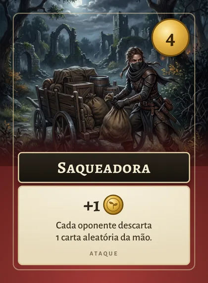
Cada oponente embaralha a mão, e você tira uma carta às cegas dela para o descarte dele.
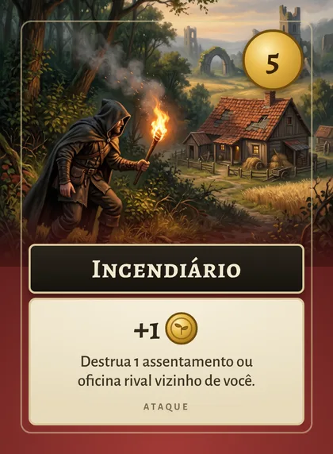
Destrua um assentamento ou oficina rival vizinho de uma construção sua. O hexágono fica livre; o dono devolve a peça, mas fica com as cartas que ganhou.
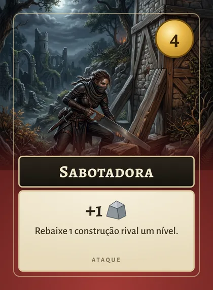
Rebaixe uma construção rival um nível: castelo vira torre, torre ou oficina vira assentamento. Não afeta assentamentos.
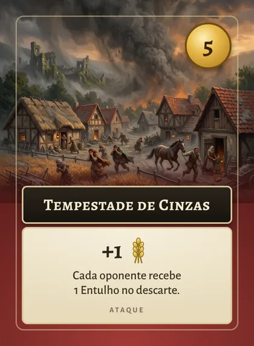
Cada oponente coloca 1 Entulho no descarte. O Entulho não faz nada e vale −1 PV no fim. Acabaram os 12, acabou a tempestade.
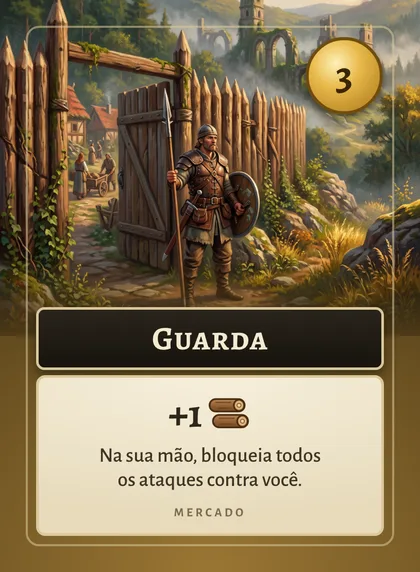
Se a Guarda estiver na sua mão quando você for atacado, mostre-a e bloqueie o ataque. Ela continua na mão. No seu turno, você pode jogá-la por madeira ou guardá-la.
Muralha: uma construção cercada por muralha não pode ser alvo do Incendiário nem da Sabotadora. A Saqueadora e a Tempestade atacam o jogador, não o mapa, e só a Guarda as detém.
Outras regras
Troca
A qualquer momento do seu turno, entregue 3 recursos iguais e receba 1 de outro tipo. Com o Negociante em jogo, a troca é 2 por 1 até o fim do turno.
Exílio
Uma vez por turno, pague 2 para tirar uma carta da mão do jogo. O Ermitão exila uma carta de graça. É assim que você se livra de Colonos fracos e de Entulho.
Armazém
No fim do turno em que jogou o Armazém, guarde até 2 recursos em vez de devolvê-los. Eles ficam disponíveis no seu próximo turno.
Cartógrafo
Neste turno, seus assentamentos não precisam ser vizinhos de uma construção sua: dá para pular para a Ruína do outro lado do mapa.
Cartas que contam
Pedágio: +1 por torre ou castelo seu. Taberneira: +1 por construção sua, até 3. Cobradora: +1 , e mais 1 por oponente com mais pontos no mapa que você.
Comprar cartas
Efeitos de "+1 carta" compram do seu baralho na hora. Se o baralho acabou, embaralhe o descarte, sem as cartas já jogadas neste turno.
Todas as cartas
As 37 cartas diferentes e quantas de cada vêm na caixa. O número no canto é o custo no mercado; cartas sem custo não são compradas, são ganhas ao construir ou já começam no seu baralho.
Jogando com baralhos comuns
Com 4 baralhos de 52 cartas com o mesmo verso (ou em sleeves opacos), dá para jogar sem as cartas impressas. Cada carta do Terra Fértil corresponde a uma carta do baralho, e as 4 cópias dão conta das quantidades. Os coringas não são usados.
♣ Paus: baralho inicial e Entulho
| Carta | É o quê |
|---|---|
| A, 2, 3, 4, 5 | Colono |
| 6, 7 | Lenhador |
| 8, 9 | Agricultora |
| 10 | Pedreiro |
| J, Q, K | Entulho (12 no total) |
O baralho inicial de cada jogador é o Ás ao 10 de paus de um dos baralhos.
♥ Copas: produção
| Carta | É o quê |
|---|---|
| A, 2, 3 | Bosque |
| 4, 5, 6 | Lavoura |
| 7, 8 | Lavra |
| 9, 10 | Feira |
| J, Q | Relíquia |
| K | Santuário |
Ficam em pilhas separadas ao lado do mapa.
♠ Espadas: ataques, defesa e oficinas
| Carta | É o quê | Manter |
|---|---|---|
| A | Saqueadora | 3 |
| 2 | Incendiário | 2 |
| 3 | Sabotadora | 2 |
| 4 | Tempestade de Cinzas | 3 |
| 5 | Guarda | 4 |
| 6 | Ermitão | 3 |
| 7 | Batedora | 3 |
| 8 | Cartógrafo | 2 |
| 9 | Monumento | 3 |
| 10 | Serraria | pilha |
| J | Moinho | pilha |
| Q | Pedreira | pilha |
| K | Mercado | pilha |
♦ Ouros: mercado
| Carta | É o quê | Manter |
|---|---|---|
| A | Mercador | 3 |
| 2 | Serralheira | 3 |
| 3 | Celeiro | 3 |
| 4 | Canteiro | 3 |
| 5 | Arauto | 3 |
| 6 | Engenheira | 2 |
| 7 | Pioneiro | 2 |
| 8 | Pedágio | 2 |
| 9 | Taberneira | 2 |
| 10 | Cobradora | 2 |
| J | Armazém | 3 |
| Q | Negociante | 3 |
| K | Prefeita | 2 |
Montando o mercado: junte todas as ouros e as espadas do Ás ao 9. De cada carta com "Manter 3", tire 1 das 4 cópias; com "Manter 2", tire 2; a Guarda fica com as 4. Sobram 58 cartas: embaralhe e abra 6. Use feijões ou moedas como recursos, e as peças impressas, botões ou peões de outro jogo como construções.
Resumo rápido
Terra Fértil em uma olhada
- Jogue cartas e pegue os recursos
- Compre no mercado (6 cartas abertas)
- Construa quantas vezes pagar
- Troque 3:1 à vontade · exile 1 carta por 2
- Descarte tudo, perca os recursos, compre 5
- Assentamento → 1 PV + carta do terreno
- Oficina 2 → 1 PV + carta dobrada
- Torre 2 → 2 PV
- Castelo 3 → 4 PV (sobre torre)
- Muralha 3 → protege
- Ruína +1 PV e + · Coração +2 PV
- Meta no mapa: 15 (4 jog.) · 16 (3) · 18 (2)
- Termina a rodada
- Some as cartas: Monumento 3 · Santuário 2 · Relíquia 1 · Entulho −1
- Empate: mais construções